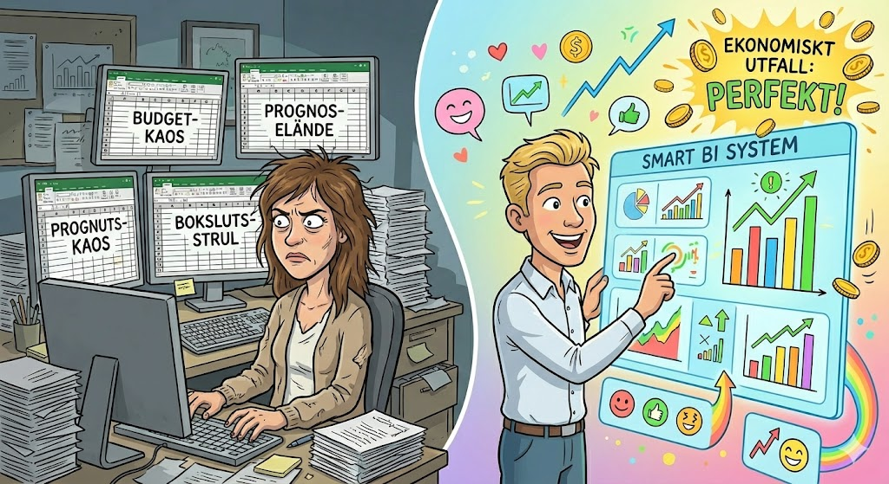

Quiz: Nordiska CFO:er 2025
Mellan Excel och AI – vad säger forskningen och verkligheten?
Sida 1 av 5
Mellan Excel och AI – vad säger forskningen och verkligheten?

Nu är du redo! Testa dina kunskaper om nordiska CFO:ers vardag, Excel och beslutsfattande! 📊
Filstruktur: Detta quiz är byggt med separation of concerns-principen, där HTML, CSS och JavaScript är uppdelade i separata filer:
Att dela upp kod i separata filer ger flera fördelar:
Skapad: 2025-11-28 med AI-assistans (Claude Opus 4.5)
Baserad på: Hypergenes rapport "Confessions of a Nordic CFO 2025" samt akademisk forskning om beslutsfattande och systemimplementering
Fokus: Detta quiz fokuserar på nordiska CFO:ers vardag, verktygsanvändning, beslutsfattande och förutsättningar för lyckad systemimplementering.
Quiz: Nordiska CFO:er 2025 – mellan Excel och AI
Frågor och fördjupade förklaringar baserade på (i Harvard-format):
Detta quiz är skapat för att utforska nordiska ekonomichefers vardag och de akademiska perspektiv som belyser deras utmaningar med beslutsfattande, verktyg och systemintegration.
📊 Baseras på: Nordens största CFO-undersökning med 438 deltagare från Sverige, Norge och Finland.
Den fullständiga referenslistan med alla akademiska källor finns i bloggtexten: "Confessions of a Nordic CFO 2025 – en kritisk granskning av nordiska ekonomichefers vardag".
Hypergene: hypergene.com/sv
Hämta rapporten: Confessions of a Nordic CFO
Läs mer på bloggen: Controller utan gränser